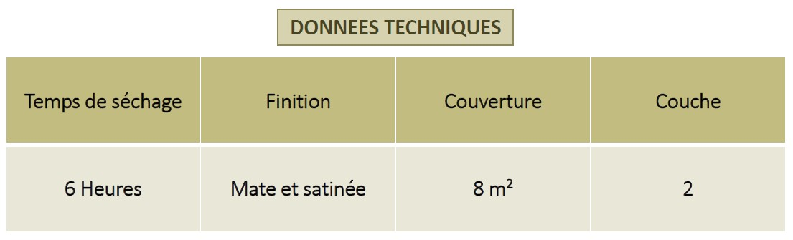

Peinture en émulsion de qualité supérieure, offrant une expérience riche en couleurs grâce à la précision et à l’éxactitude de ces dernières et à sa finition mate. Basée sur une émulsion acrylique pure et conçue pour toutes les surfaces intérieures.